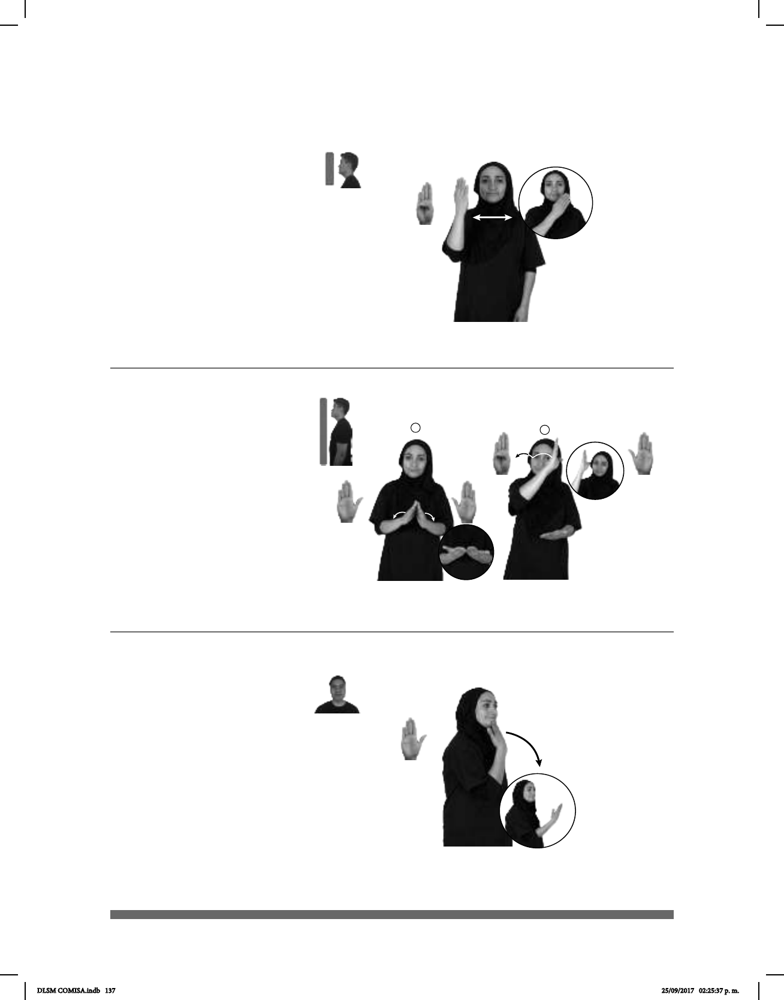

137
Seña: SM
B-P.1
Palma oblicua hacia
adentro y hacia la izquierda.
A la altura del rostro
del lado derecho al lado izquierdo.
Recto.
sust. f. Libro sagrado
del cristianismo que comprende el
Antiguo y el NuevoTestamento.
(B-P 79)
DIARIO BIBLIA dm-ARTURO LEER
Arturo lee la biblia diariamente.
1
2
(B-P 80)
____muy
BIBLIOTECA MÉXICO GRANDE
La Biblioteca de México es muy grande.
(B-P 81)
AYER pro-YO PASEAR SENTIR BIEN
Ayer fui a pasear y me sentí bien.
Seña: SC: I. SS; II. SB
I. B-P.2; II. MD B-P.1,
MB B-P.2
I. Las palmas inician
encontradas y terminan hacia arriba; II.
MD palma hacia la izquierda. MB palma
hacia arriba.
I. A la altura del plexo; II. MD
a la altura del rostro. MB a la altura del
plexo.
I. Las manos parten desde
un mismo punto y luego de abren hacia
abajo sin despegar las muñecas; II. La
mano simula saltos de izquierda a derecha.
sust. f. Lugar donde se tienen
considerable número de libros ordenados
para la lectura.
Seña: SM
B-P.2
Palma hacia adentro.
Sobre la barbilla.
Recto hacia enfrente.
Se esboza
una sonrisa.
adv. Todo aquello que
es apto para satisfacer, directa o
indirectamente una necesidad.
DLSM COMISA.indb 137 25/09/2017 02:25:37 p. m.